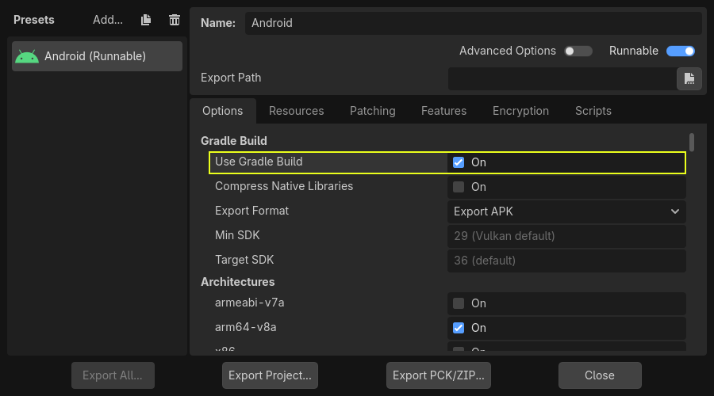

Build Gradle cho Android
Godot cung cấp tùy chọn build bằng hệ thống build Gradle. Thay vì dùng template đã được build sẵn đi kèm Godot, một dự án Android Java sẽ được cài vào thư mục dự án của bạn. Sau đó Godot sẽ build nó và dùng nó làm export template mỗi khi bạn xuất dự án.
Có một số lý do khiến bạn có thể muốn làm điều này:
Xuất tệp AAB cho Google Play.
Chỉnh sửa dự án trước khi được build.
Thêm các SDK bên ngoài được build cùng dự án của bạn.
Phần native của template (thư viện .so có trong APK) vẫn được biên dịch sẵn. Điều này có nghĩa là, không giống như biên dịch một export template Android tùy chỉnh, bạn không cần cài đặt bộ công cụ C++ hay clone mã nguồn Godot.
Cấu hình Gradle build là một quy trình khá đơn giản. Nhưng trước tiên, bạn cần làm theo các bước trong xuất cho Android cho đến phần Thiết lập trong Godot. Sau đó, hãy làm theo các bước bên dưới.
Thiết lập môi trường Gradle build
Vào menu Project và cài đặt template Gradle Build:

Hãy đảm bảo export template đã được tải về. Nếu chưa, menu này sẽ giúp bạn tải chúng.
Một dự án Android dựa trên Gradle sẽ được tạo trong res://android/build. Bạn không cần chỉnh sửa các tệp này trừ khi thực sự cần thay đổi dự án.
Thực hiện Gradle build từ trình chỉnh sửa Android
Kể từ Godot 4.6, có thể thực hiện Gradle build từ trình chỉnh sửa Android. Việc này yêu cầu cài đặt ứng dụng Godot Android Build Environment (GABE) trên cùng thiết bị đang chạy trình chỉnh sửa.
Ghi chú
Ứng dụng này không cần thiết khi xuất từ trình chỉnh sửa Android bằng template APK dựng sẵn, hoặc khi xuất sang các nền tảng khác.
Ứng dụng này cho phép bạn cài đặt mọi thứ cần thiết để build dự án Android bằng Gradle. Trình chỉnh sửa sẽ gọi nó để thực hiện Gradle build khi xuất sang Android.
Để thiết lập môi trường build, hãy mở ứng dụng và làm theo các hướng dẫn sau:
Đảm bảo bạn đang có kết nối Internet.
Mở tab từ thanh điều hướng phía dưới.
Nhấp .
Sau khi cài đặt xong, bạn có thể xuất dự án bằng Gradle build từ trình chỉnh sửa Godot.
Bật Gradle build và xuất dự án
Khi thiết lập dự án Android trong hộp thoại Project > Export, cần bật Gradle Build:

Từ giờ trở đi, mỗi khi xuất dự án hoặc dùng one-click deploy, hệ thống build Gradle sẽ được gọi để tạo template mới. Các template đã build sẽ tự động được dùng sau đó, nên không cần cấu hình thêm.
Ghi chú
Khi dùng hệ thống build Gradle cho Android, các asset nằm trong một thư mục có tên bắt đầu bằng dấu gạch dưới sẽ không được đưa vào APK được tạo. Điều này không áp dụng cho các asset có tên tệp bắt đầu bằng dấu gạch dưới.
Ví dụ, _example/image.png sẽ không được đưa vào dưới dạng asset, nhưng _image.png thì có.